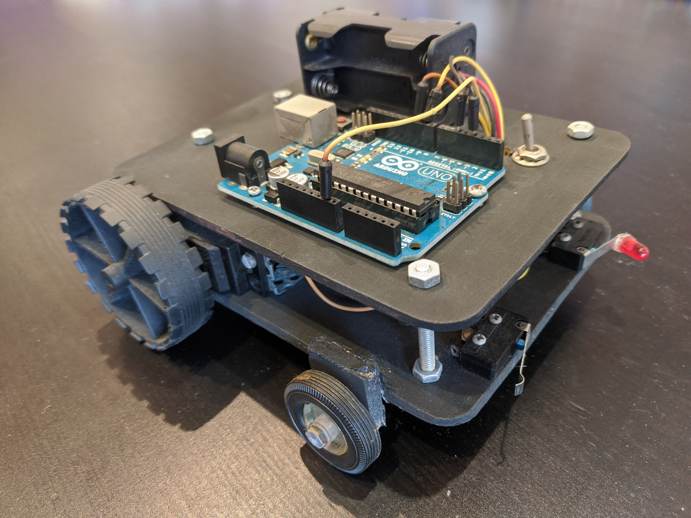

About Me
I live in a city near Barcelona. I’ve had the luck of studying at a pretty good high school and college. I
decided to start this personal website becouse I...
I’ve liked video games since I can remember, I specifically recall playing Starcraft and Monster Hunter with
friends at school. It wasn’t until high school that I started wanting to know more about video games:
- How were they made?
- Who made them?
- Who made them?
- What was a game engine?
So I started learning programming and decided to do a Bachelor Degree in Informatics Engineering to learn about computer graphics, artificial intelligence and more video game related topics.
Studies
In this section you can check the most up-to-date status of my degrees.
High School [Finished]
It wasn’t until high school that I had my first experience with programming. Thanks to the Programing optative subject I learned how to program an Arduino and make a video game using Scratch. And not only that, I also started using open source programs like Gimp or Inkscape.
direction each time a trigger is actioned
Bachelor Degree in Informatics Engineering (specialization in Computing) [Finished]
I coursed a Bachelor Degree in Informatics Engineering (specialization in Computing) at the Facultat d'Informàtica de Barcelona (Universitat Politècnica de Catalunya). This degree is also known as Computer Science in some countries. During the Videogames subject I made the first game that I’m proud of, its name is Does Not Compute.
Inspirations
I’d like to take advantage of this little corner to talk about some video games that are very dear to me. I love games like Shadow of the Colossus or Silent Hill 2, but I feel like the following 3 games changed me in meaningful ways:
Mass Effect (BioWare, 2007)
Mass Effect was the reason I bought a 360. It was also the game that made me realize that I wanted to know how video games were made. To this day, I'm still amazed at the ability of the original Mass Effect to make its universe seem bigger than it actually is, the writing and some clever design decisions do wonders for the game. Talking to the Sovereign for the first time is still as powerful a moment as it was in 2007.
Metal Gear Solid 2: Sons of Liberty (Kojima Productions, 2001)
The first time I played Sons of Liberty I remember feeling like I was missing a lot. I came back years later just to realize how thematically advanced this game was for its time. Sons of Liberty is a work about memes, video games and the relation between player and creator. I could be hours talking about Hideo Kojima’s best game but I doubt I can compete with George Weidman’s terrific Critical Close-up:
NIER (Cavia Inc., 2010)
I played NIER for the first time in 2014 and since then I’ve been thinking about it from time to time. What Yoko Taro (and many others like the dev team at Cavia or writer Sawako Natori) achieved with this game shows that videogames still have a long way to go before we reach the limits of its expressiveness. I’m glad that with the recently updated version more people have been able to play this monumental work.